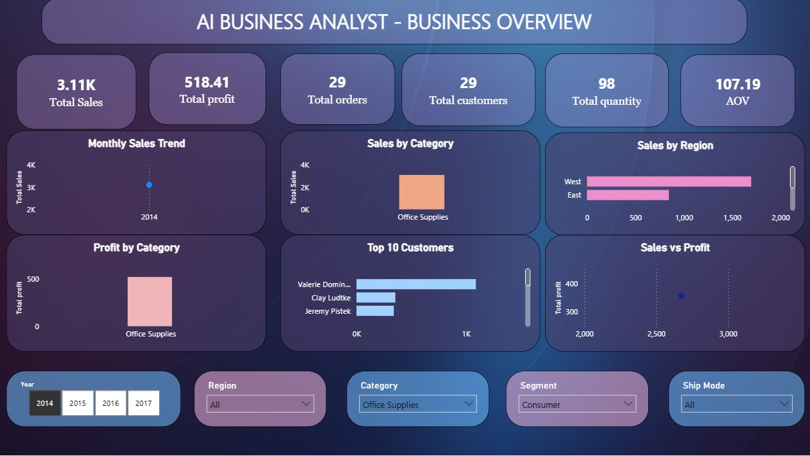

Total Sales
Available in Power BIConnect your published reportBUSINESS INTELLIGENCE PLATFORM
AI Business Analyst
Intelligent Business Insights from your business data
System Online
WORKSPACE OVERVIEW
Good evening
Ask questions, explore your business data and discover actionable insights.
Business performance
Your live KPIs will be available through the Power BI report.
Total Profit
Available in Power BIConnect your published reportTotal Orders
Available in Power BIConnect your published reportAverage Order Value
Available in Power BIConnect your published reportAI-POWERED ANALYSIS
Turn business questions into clear answers.
Use natural language to explore the connected orders database. Results include AI insights, the generated query, and source data.
POWER BI
Visual reporting workspace
Your Power BI dashboard is ready to be embedded once the report is published.
AI ANALYST
Ask your business anything
Use natural language to analyze your business data.
Start your analysis
Ask a business question to generate an AI-powered insight.
Suggested questions
Choose a starting point, then tailor the question to your needs.
POWER BI
Business Intelligence Dashboard
Explore visual business insights from our Power BI report.
POWER BI REPORT PREVIEW
Executive Overview

Static preview — Power BI Service publishing is not required.
INSIGHTS
Business insights
Review AI-generated analysis from this workspace.
No saved insights yet.
Ask the AI Analyst a business question to begin discovering insights.
QUERY HISTORY
Recent analysis
Your current browser session can retain recent questions and answers.
SETTINGS
Workspace settings
Manage safe frontend preferences and connection visibility.
Appearance
Clean, high-contrast workspace optimized for business analysis.
Light themeSystem
AI Analyst, SQL generation, and data retrieval are managed securely by the backend.
OperationalAPI Status
Connected endpoint: http://127.0.0.1:5000/ask